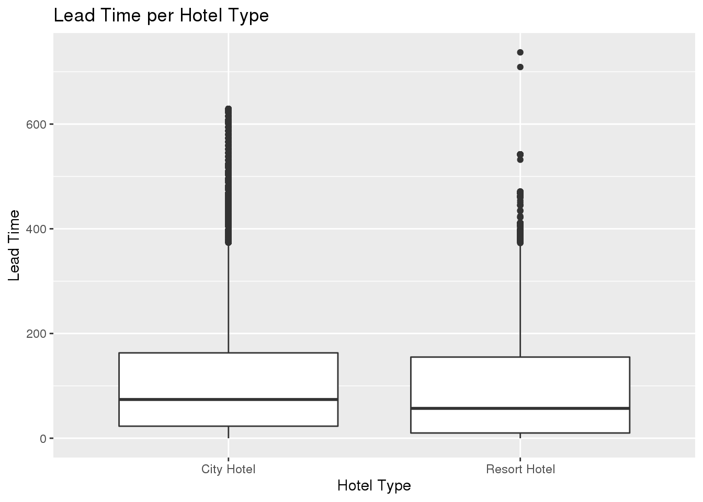
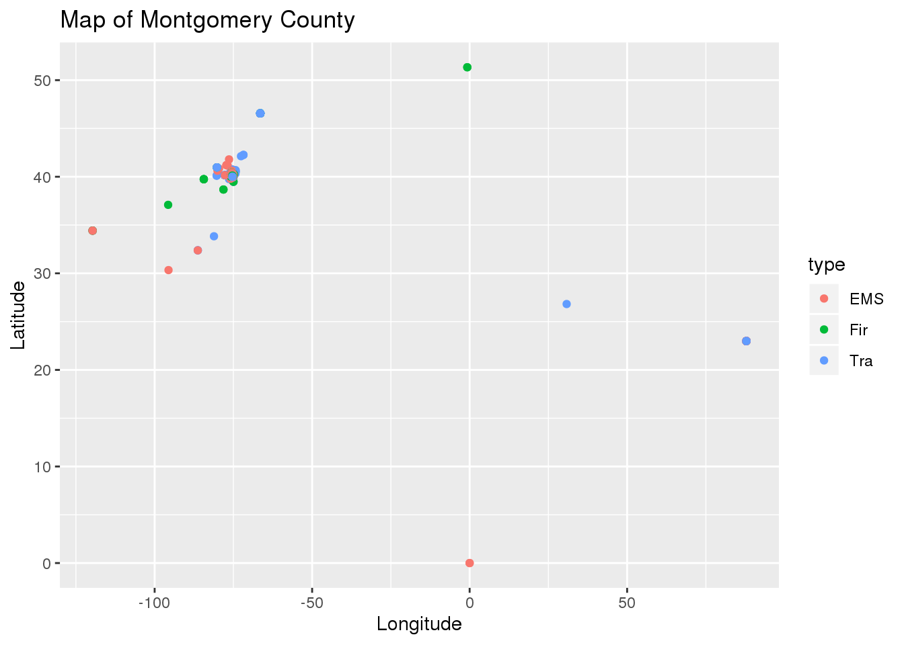
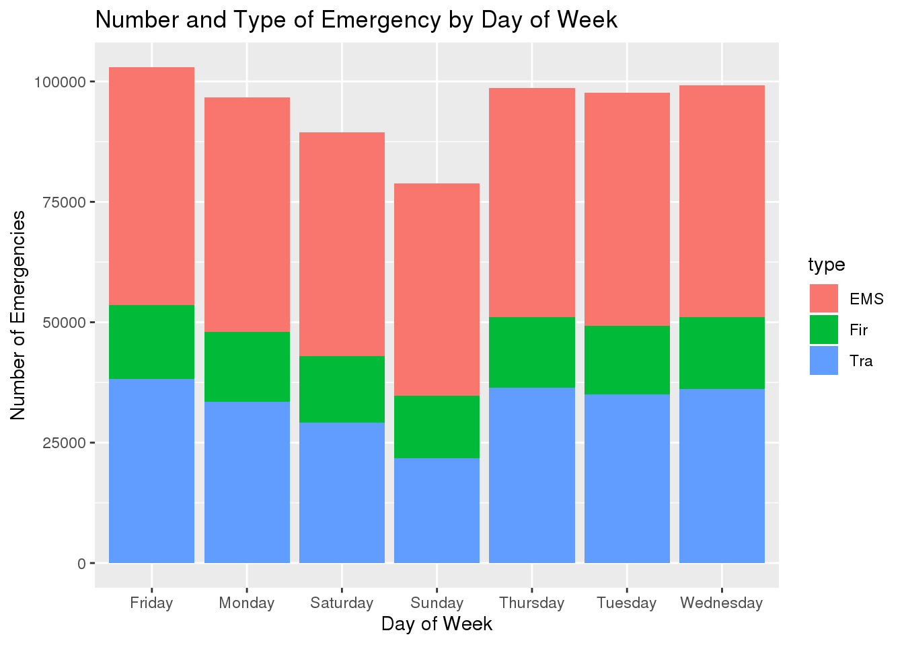

library(here)## here() starts at /home/ak031/my-bloglibrary(ggplot2)
library(tidyverse)## ── Attaching packages ─────────────────────────────────────── tidyverse 1.3.0 ──## ✓ tibble 2.1.3 ✓ dplyr 0.8.3
## ✓ tidyr 1.0.0 ✓ stringr 1.4.0
## ✓ readr 1.3.1 ✓ forcats 0.4.0
## ✓ purrr 0.3.3## ── Conflicts ────────────────────────────────────────── tidyverse_conflicts() ──
## x dplyr::filter() masks stats::filter()
## x dplyr::lag() masks stats::lag()library(readxl)
library(patchwork)
knitr::opts_chunk$set(echo = FALSE, tidy = TRUE)## 'data.frame': 119390 obs. of 32 variables:
## $ hotel : Factor w/ 2 levels "City Hotel","Resort Hotel": 2 2 2 2 2 2 2 2 2 2 ...
## $ is_canceled : int 0 0 0 0 0 0 0 0 1 1 ...
## $ lead_time : int 342 737 7 13 14 14 0 9 85 75 ...
## $ arrival_date_year : int 2015 2015 2015 2015 2015 2015 2015 2015 2015 2015 ...
## $ arrival_date_month : Factor w/ 12 levels "April","August",..: 6 6 6 6 6 6 6 6 6 6 ...
## $ arrival_date_week_number : int 27 27 27 27 27 27 27 27 27 27 ...
## $ arrival_date_day_of_month : int 1 1 1 1 1 1 1 1 1 1 ...
## $ stays_in_weekend_nights : int 0 0 0 0 0 0 0 0 0 0 ...
## $ stays_in_week_nights : int 0 0 1 1 2 2 2 2 3 3 ...
## $ adults : int 2 2 1 1 2 2 2 2 2 2 ...
## $ children : int 0 0 0 0 0 0 0 0 0 0 ...
## $ babies : int 0 0 0 0 0 0 0 0 0 0 ...
## $ meal : Factor w/ 5 levels "BB","FB","HB",..: 1 1 1 1 1 1 1 2 1 3 ...
## $ country : Factor w/ 178 levels "ABW","AGO","AIA",..: 137 137 60 60 60 60 137 137 137 137 ...
## $ market_segment : Factor w/ 8 levels "Aviation","Complementary",..: 4 4 4 3 7 7 4 4 7 6 ...
## $ distribution_channel : Factor w/ 5 levels "Corporate","Direct",..: 2 2 2 1 4 4 2 2 4 4 ...
## $ is_repeated_guest : int 0 0 0 0 0 0 0 0 0 0 ...
## $ previous_cancellations : int 0 0 0 0 0 0 0 0 0 0 ...
## $ previous_bookings_not_canceled: int 0 0 0 0 0 0 0 0 0 0 ...
## $ reserved_room_type : Factor w/ 10 levels "A","B","C","D",..: 3 3 1 1 1 1 3 3 1 4 ...
## $ assigned_room_type : Factor w/ 12 levels "A","B","C","D",..: 3 3 3 1 1 1 3 3 1 4 ...
## $ booking_changes : int 3 4 0 0 0 0 0 0 0 0 ...
## $ deposit_type : Factor w/ 3 levels "No Deposit","Non Refund",..: 1 1 1 1 1 1 1 1 1 1 ...
## $ agent : Factor w/ 334 levels "1","10","103",..: 334 334 334 157 103 103 334 156 103 40 ...
## $ company : Factor w/ 353 levels "10","100","101",..: 353 353 353 353 353 353 353 353 353 353 ...
## $ days_in_waiting_list : int 0 0 0 0 0 0 0 0 0 0 ...
## $ customer_type : Factor w/ 4 levels "Contract","Group",..: 3 3 3 3 3 3 3 3 3 3 ...
## $ adr : num 0 0 75 75 98 ...
## $ required_car_parking_spaces : int 0 0 0 0 0 0 0 0 0 0 ...
## $ total_of_special_requests : int 0 0 0 0 1 1 0 1 1 0 ...
## $ reservation_status : Factor w/ 3 levels "Canceled","Check-Out",..: 2 2 2 2 2 2 2 2 1 1 ...
## $ reservation_status_date : Factor w/ 926 levels "1/1/2015","1/1/2016",..: 669 669 702 702 735 735 735 735 570 449 ...## , , month = January
##
##
## 2015 2016 2017
## City Hotel 0 1364 2372
## Resort Hotel 0 884 1309
##
## , , month = February
##
##
## 2015 2016 2017
## City Hotel 0 2371 2594
## Resort Hotel 0 1520 1583
##
## , , month = March
##
##
## 2015 2016 2017
## City Hotel 0 3046 3412
## Resort Hotel 0 1778 1558
##
## , , month = April
##
##
## 2015 2016 2017
## City Hotel 0 3561 3919
## Resort Hotel 0 1867 1742
##
## , , month = May
##
##
## 2015 2016 2017
## City Hotel 0 3676 4556
## Resort Hotel 0 1802 1757
##
## , , month = June
##
##
## 2015 2016 2017
## City Hotel 0 3923 3971
## Resort Hotel 0 1369 1676
##
## , , month = July
##
##
## 2015 2016 2017
## City Hotel 1398 3131 3559
## Resort Hotel 1378 1441 1754
##
## , , month = August
##
##
## 2015 2016 2017
## City Hotel 2480 3378 3125
## Resort Hotel 1409 1685 1800
##
## , , month = September
##
##
## 2015 2016 2017
## City Hotel 3529 3871 0
## Resort Hotel 1585 1523 0
##
## , , month = October
##
##
## 2015 2016 2017
## City Hotel 3386 4219 0
## Resort Hotel 1571 1984 0
##
## , , month = November
##
##
## 2015 2016 2017
## City Hotel 1235 3122 0
## Resort Hotel 1105 1332 0
##
## , , month = December
##
##
## 2015 2016 2017
## City Hotel 1654 2478 0
## Resort Hotel 1266 1382 0##
## 2015 2016 2017
## City Hotel 13682 38140 27508
## Resort Hotel 8314 18567 13179## Min. 1st Qu. Median Mean 3rd Qu. Max.
## 0 18 69 104 160 737## Min. 1st Qu. Median Mean 3rd Qu. Max.
## 0.0000 0.0000 0.0000 0.3704 1.0000 1.0000Determine if there is a difference in cancellation rates between the two types of hotels. - yes there is. People are more likely to cancel if they booked at the city hotel. The cancelation rates for the city hotel have stayed relatively consistent over the three years we have data for but the cancellation rates for the resort hotel have been increasing over the three years of data.
## # A tibble: 6 x 3
## # Groups: hotel [2]
## hotel arrival_date_year mean_cancelation_rate_per_year
## <fct> <int> <dbl>
## 1 City Hotel 2015 0.439
## 2 City Hotel 2016 0.404
## 3 City Hotel 2017 0.425
## 4 Resort Hotel 2015 0.257
## 5 Resort Hotel 2016 0.266
## 6 Resort Hotel 2017 0.308Determine if there is a difference in lead times between the two types of hotels. - yes there is a difference in lead times between the resort and city hotel. The city hotel has a much longer lead time than the resort hotel. Both hotel’s lead times have been increasing over the three years of data.
## # A tibble: 6 x 4
## # Groups: hotel [2]
## hotel arrival_date_year mean_lead_time median_lead_time
## <fct> <int> <dbl> <dbl>
## 1 City Hotel 2015 106. 60
## 2 City Hotel 2016 108. 71
## 3 City Hotel 2017 114. 87
## 4 Resort Hotel 2015 83.3 54
## 5 Resort Hotel 2016 92.1 54
## 6 Resort Hotel 2017 99.4 66
Determine which month is the busiest for each type of hotel. - the city hotel has approximately the same number of guests year round, their busiest months are April and July. - the resort hotel is busiest June-September with its slowest months being January and November
## # A tibble: 24 x 3
## # Groups: hotel [2]
## hotel month total_guests_per_month
## <fct> <fct> <int>
## 1 City Hotel January 6721
## 2 City Hotel February 9376
## 3 City Hotel March 12333
## 4 City Hotel April 15101
## 5 City Hotel May 15464
## 6 City Hotel June 15116
## 7 City Hotel July 17203
## 8 City Hotel August NA
## 9 City Hotel September 13961
## 10 City Hotel October 14133
## # … with 14 more rowsdetermine the lead time per month of arrival - when is the hotel busier so you need to book earlier? - if you want a room at the city hotel between May and October you will need to book 4-5 months in advance compared to booking a room in January or February you will only need to book about 2 months in advance - if you want a room at the resort hotel between May and October you will also need to book 4-6 months in advance. If you want a room November - March you will only need to book 2 months in advance.
## # A tibble: 24 x 3
## # Groups: hotel [2]
## hotel month mean_lead_time
## <fct> <fct> <dbl>
## 1 City Hotel January 56.6
## 2 City Hotel February 52.8
## 3 City Hotel March 73.2
## 4 City Hotel April 99.1
## 5 City Hotel May 116.
## 6 City Hotel June 124.
## 7 City Hotel July 154.
## 8 City Hotel August 131.
## 9 City Hotel September 128.
## 10 City Hotel October 126.
## # … with 14 more rows## 'data.frame': 663522 obs. of 13 variables:
## $ lat : num 40.3 40.3 40.1 40.1 40.3 ...
## $ lng : num -75.6 -75.3 -75.4 -75.3 -75.6 ...
## $ desc : Factor w/ 663282 levels ". ; AMBLER; 2018-04-05 @ 14:35:42;",..: 467158 67539 251193 14378 102372 87032 312838 117579 342883 62923 ...
## $ zip : int 19525 19446 19401 19401 NA 19446 19044 19426 19438 19462 ...
## $ type : Factor w/ 3 levels "EMS","Fir","Tra": 1 1 2 1 1 1 1 1 1 3 ...
## $ title : Factor w/ 148 levels "EMS: ABDOMINAL PAINS",..: 10 23 104 18 25 42 50 60 69 146 ...
## $ timeStamp: Factor w/ 543989 levels "1/1/2016 0:10",..: 134451 134454 134442 134447 134449 134443 134446 134444 134448 134457 ...
## $ date : Factor w/ 1694 levels "1/1/2016","1/1/2017",..: 404 404 404 404 404 404 404 404 404 404 ...
## $ dow : Factor w/ 7 levels "Friday","Monday",..: 5 5 5 5 5 5 5 5 5 5 ...
## $ time : Factor w/ 1440 levels "0:00","0:01",..: 551 570 400 528 537 460 527 498 532 576 ...
## $ twp : Factor w/ 69 levels "","ABINGTON",..: 36 20 37 37 30 23 21 49 32 42 ...
## $ addr : Factor w/ 41292 levels ".","10TH AVE",..: 29611 3866 15602 948 6189 5155 19440 7168 21124 3479 ...
## $ e : int 1 1 1 1 1 1 1 1 1 1 ...Determine which area of Montgomery County had the most emergencies. - Create a spatial map which shows the number of emergencies across the county.

Determine which type of emergency is the most common. - Will most likely do this by generating different data visualizations and calculating summary statistics like means, medians, and standard deviations.
## # A tibble: 148 x 2
## # Groups: title [148]
## title n
## <fct> <int>
## 1 Traffic: VEHICLE ACCIDENT - 148372
## 2 Traffic: DISABLED VEHICLE - 47909
## 3 Fire: FIRE ALARM 38336
## 4 EMS: FALL VICTIM 34676
## 5 EMS: RESPIRATORY EMERGENCY 34248
## 6 EMS: CARDIAC EMERGENCY 32332
## 7 EMS: VEHICLE ACCIDENT 25513
## 8 Traffic: ROAD OBSTRUCTION - 23235
## 9 EMS: SUBJECT IN PAIN 19646
## 10 EMS: HEAD INJURY 18301
## # … with 138 more rowsDetermine which day of the week has the most traffic accidents. - Will most likely do this by generating different data visualizations and calculating summary statistics like means, medians, and standard deviations.
## # A tibble: 7 x 2
## # Groups: dow [7]
## dow n
## <fct> <int>
## 1 Friday 102942
## 2 Wednesday 99157
## 3 Thursday 98683
## 4 Tuesday 97684
## 5 Monday 96745
## 6 Saturday 89452
## 7 Sunday 78859